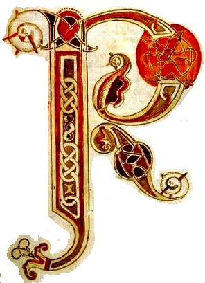
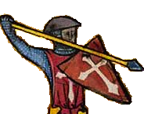

ac-Man

Your current level is:
Highest score:
points
Sir Pac needs to collect all the peaches before the monsters catch him.
Can you help? Direct him by pressing the up / down / left / right keys.
If he can catch a monster straight after meeting a hedgehog bearing peaches, then he may get enough points to increase his fame.
Click to play!
Think you can win this time?
Click to play!
Reset